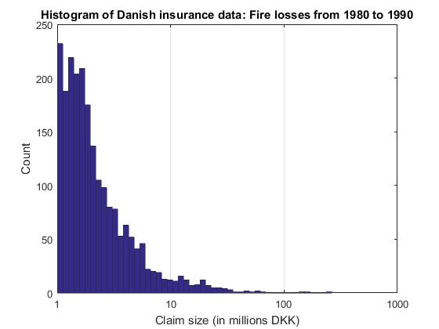
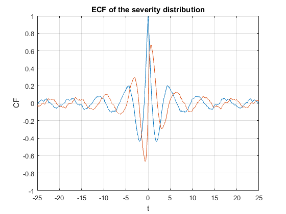
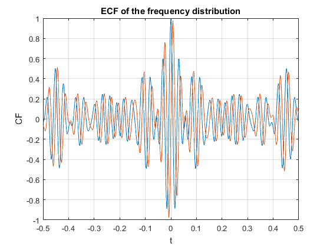
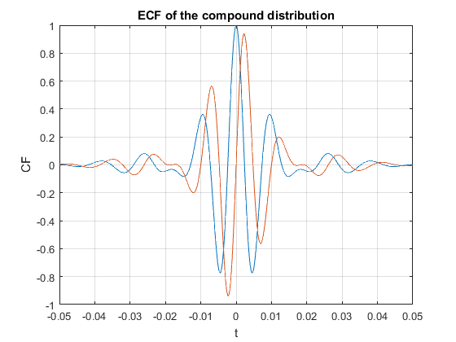
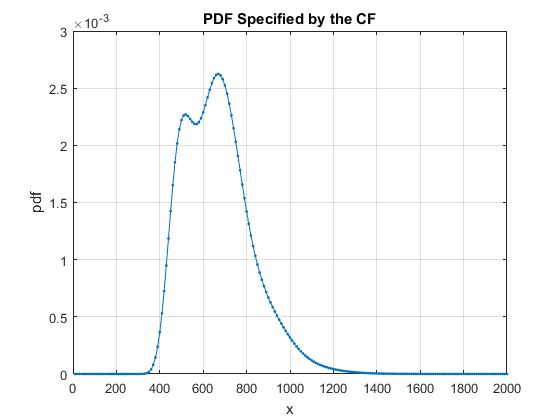
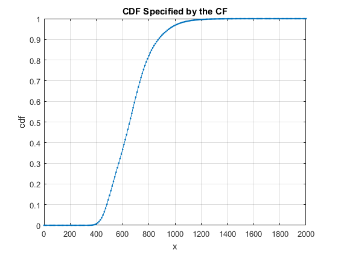
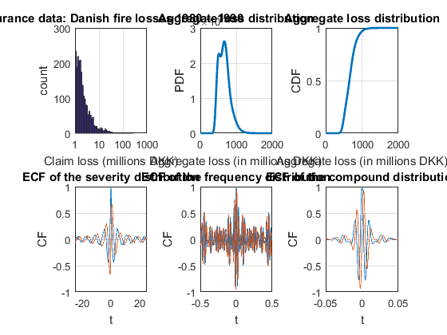

Contents
EMPIRICAL CRM DISTRIBUTION (The Danish Insurance Data)
(c) 2016 Viktor Witkovsky, witkovsky@gmail.com
Version: 15-Nov-2016
clear
close all
The Danish Insurance Data
load('DanishFireData.mat')
figure1 = figure;
axes1 = axes('Parent',figure1);
hist(log10(Severity),50);
xlim(axes1,[0 3]);
set(axes1,'CLim',[1 3],'XGrid','on',...
'XTick',[0 1 2 3],...
'XTickLabel',{'1','10','100','1000'});
title('Histogram of Danish insurance data: Fire losses from 1980 to 1990')
xlabel('Claim size (in millions DKK)')
ylabel('Count')

Empirical Compound Distribution
Empirical Characteristic Function (ECF) of the severity distribution
cfX = @(t) cfE_DiracMixture(t,Severity);
t = linspace(-25,25,501);
figure
plot(t, real(cfX(t)),t,imag(cfX(t)))
axis([-25,25,-1,1]);
title('ECF of the severity distribution')
xlabel('t')
ylabel('CF')
grid on

Empirical Characteristic Function (ECF) of the frequency distribution
cfN = @(t) cfE_DiracMixture(t,Frequency);
t = linspace(-0.5,0.5,501);
figure
plot(t, real(cfN(t)),t,imag(cfN(t)))
axis([-0.5,0.5,-1,1]);
title('ECF of the frequency distribution')
xlabel('t')
ylabel('CF')
grid on

Empirical Characteristic Function (ECF)of the compound distribution
cf = @(t) cfN(-1i*log(cfX(t)));
t = linspace(-.05,.05,501);
figure
plot(t, real(cf(t)),t,imag(cf(t)))
axis([-.05,.05,-1,1]);
title('ECF of the compound distribution')
xlabel('t')
ylabel('CF')
grid on

PDF/CDF by numerical inversion of the compound ECF
Empirical Aggregate Loss Distribution / Collective Risk Distribution of
the Danish Insurance Data
prob = [0.9 0.95 0.99];
x = linspace(0,2000,201)';
clear options
options.isCompound = true;
result = cf2DistGP(cf,x,prob,options);
disp(result)
x: [201×1 double]
cdf: [201×1 double]
pdf: [201×1 double]
prob: [9.0000e-01 9.5000e-01 9.9000e-01]
qf: [8.7294e+02 9.5359e+02 1.1128e+03]
SixSigmaRule: 10
N: 16384
dt: 2.8201e-03
T: 4.6205e+01
PrecisionCrit: 2.3491e-256
myPrecisionCrit: 1.0000e-12
isPrecisionOK: 1
xMean: 6.6686e+02
xStd: 1.5611e+02
xMin: 0
xMax: 2.2280e+03
cf: @(t)cfN(-1i*log(cfX(t)))
const: 2.0932e-247
isCompound: 1
isCircular: 0
details: [1×1 struct]
options: [1×1 struct]
tictoc: 2.1982e-03
 
PLOT CRM Data Matrix
axes1 = subplot(2,3,1);
hist(log10(Severity),50);
xlim(axes1,[0 3]);
set(axes1,'CLim',[1 3],'XGrid','on',...
'XTick',[0 1 2 3],...
'XTickLabel',{'1','10','100','1000'});
title('Insurance data: Danish fire losses 1980 -- 1990')
xlabel('Claim loss (millions DKK)')
ylabel('count')
axes2 = subplot(2,3,2);
plot(x,result.pdf,'Linewidth',2)
grid on
title('Aggregate loss distribution')
xlabel('Aggregate loss (in millions DKK)')
ylabel('PDF')
axes3 = subplot(2,3,3);
plot(x,result.cdf,'Linewidth',2);
grid on
title('Aggregate loss distribution')
xlabel('Aggregate loss (in millions DKK)')
ylabel('CDF')
axes4 = subplot(2,3,4);
t = linspace(-25,25,501);
plot(t, real(cfX(t)),t,imag(cfX(t)))
axis([-25,25,-1,1]);
title('ECF of the severity distribution')
xlabel('t')
ylabel('CF')
set(axes4,'YGrid','on');
axes5 = subplot(2,3,5);
t = linspace(-0.5,0.5,501);
plot(t, real(cfN(t)),t,imag(cfN(t)))
axis([-0.5,0.5,-1,1]);
title('ECF of the frequency distribution')
xlabel('t')
ylabel('CF')
set(axes5,'YGrid','on');
axes6 = subplot(2,3,6);
t = linspace(-.05,.05,501);
plot(t, real(cf(t)),t,imag(cf(t)))
axis([-.05,.05,-1,1]);
title('ECF of the compound distribution')
xlabel('t')
ylabel('CF')
set(axes6,'YGrid','on');
